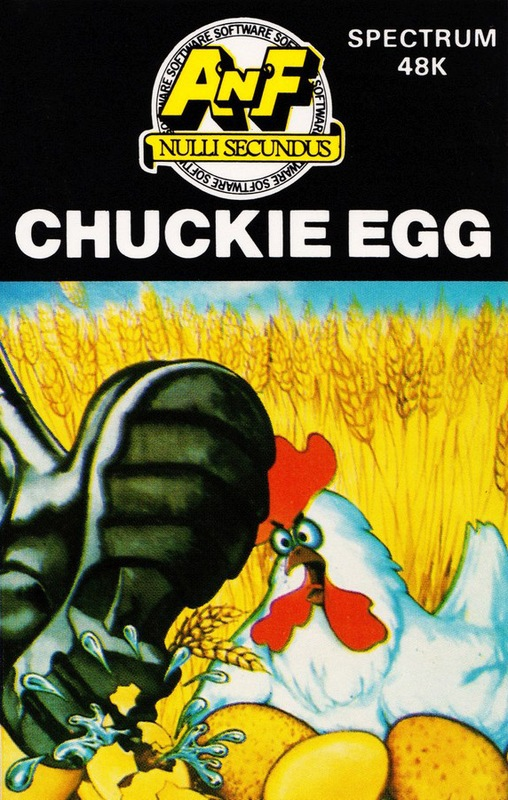

LOAD " "
LOAD " "

CHUCKIE EGGA & F have added to the mythology of the Platform Game with their Chuckie Egg, which contains some of the best screen combinations since the original arcade versions of 'Donkey Kong'. The aim of the game Is simplicity in itself. You are a little yellow — well chicken it looks like, but probably a li'll 'ol farmer boy, with a wide brimmed hat, and you must travel the wide platforms collecting eggs, whilst avoiding the understandably agitated chickens. Depending on the screen, there are various combinations of long and short platforms at different heights, connected with ladders and/or lifts. As you go through the screens so the set ups become more difficult, with more eggs to collect and more hens chasing, and more piles of — hen manure, to put it politely, to avoid.
'This game has a very good use of colour, very good, bright graphics, neatly animated and detailed. It has you climbing ladders, jumping over holes, jumping down from one level to another, riding lifts, and generally collecting eggs like a maniac. I found It fun and addictive! It also gives you user definable keys and games for up to four players.'
• 'This is hardly a new game type, but it's certainly an excellent addition to the collection of holejumpingladderclimbingnastyavoiding games for the Spectrum. What makes it addictive, apart from the very good graphics and sound, is the construction of the various platforms. These soon get to be very complicated, and like the best arcade originals, you must plan your way round carefully. The control keys are highly responsive, your man jumping beautifully, even reversing direction in mid-lump if you time it right. Very addictive and nicely frustrating.'
• 'I had a lot of trouble at first getting my man to climb or descend ladders, but this is a trick of the program. He's very difficult to centre if you're being careful about lining up, whereas if you dash at a ladder and have the ascend/descend key also pressed, he whizzes straight up as desired. What must be remembered is to change directional keys while whizzing, or he may end up going in the wrong direction at the top of the ladder. One kind ness iS that he can withstand some tremendous falls from one level to another. An excellent arcade game, with high additivity built in. But it's very expensive at almost £8 — the one drawback.'
Control keys:
user definable, 4 direction and one jump needed.
Joystick:
Can be set up to cope with most and works with Fuller anyway.
Keyboard play:
highly responsive
Use of colour:
very good
Graphics:
very good
Sound:
continuous and good
Skill levels:
gets harder with every screen
Lives:
5
Features:
speech vocabulary with Fuller Box, and 1/2/3/4 player games
General rating:
highly addictive, and very good
| Use of computer | 90% |
| Graphics | 80% |
| Playability | 85% |
| Getting started | 78% |
| Addictive qualities | 80% |
| Value for money | 65% |
| Overall | 80% |

{kind=link}